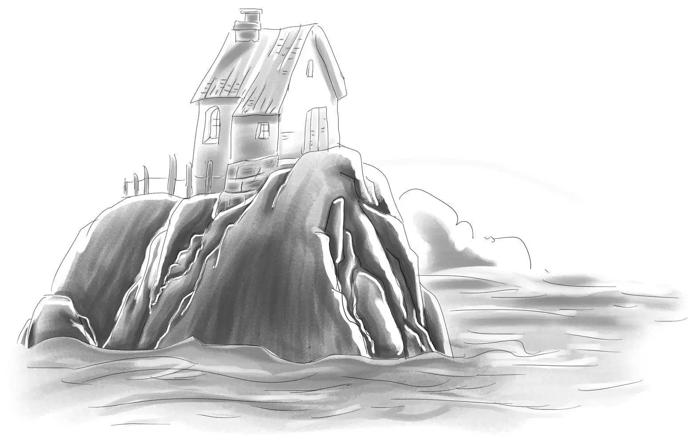
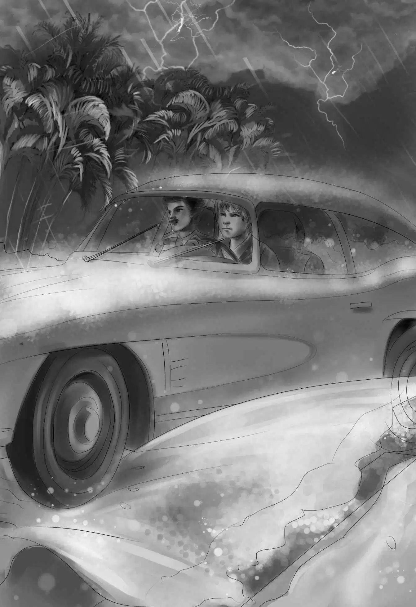

A Wild Storm

一家子关上了所有的窗户，看向窗外的大海。很快他们就改变了看法——这场雨绝不是什么毛毛小雨，而是一场真正的暴风雨。
天空变得一片漆黑，电闪雷鸣中，大雨倾盆落下，狂风围着灯塔怒吼。
“被您料中了，爷爷！”班尼叹服道，“您一说暴风雨会来，我的天，它还真来了！”
“电话线杆倒了，”亨利叫了起来，“整个镇子今晚都打不了电话了。”
“希望没人出海，”维莉说，“风浪会把船给掀翻的。”
海浪拍打着灯塔，冲上了马路，将小路给淹没了。
暴风雨越来越猛烈，闪电照亮了整片海滩，雷鸣盖过了海浪声，震耳欲聋。
“我不喜欢这样的天气，”维莉害怕地说，“太恐怖了！”
“的确很危险很可怕，”爷爷轻声说，“真希望没人驾船出海。”
暴风雨没有停下来的意思，反而变得越来越凶猛，海浪已经吞噬了整片沙滩。正在这时，楼下传来了一阵急促的敲门声。
“是谁啊？”班尼大声说，“我可不想开门，大雨会飘进来的。”
话虽如此，亨利还是去开了门。来者是库克先生。
“你们见到我儿子了么？”他喊道，“我儿子在哪里？”
“快进来！”亨利回答，“我们不知道您儿子在哪里，我们今天没见过他。”
“噢，噢！”库克先生绝望地叫道，“我妻子让我先去小白屋里找，可他没在那儿。他一定是驾着我的船出海了！怎么办？船会翻的！谁都不可能在这样的暴风雨天控制住船的！”
亨利问道：“附近有海岸巡逻队员么？”
“阿什兰镇才有，”库克先生哭喊起来，“等他们赶到这儿一切都晚了。”
“那也得争取一下。”亨利说着抓起雨衣，将门打开。
“亨利，你要去哪里？”爷爷大声问道。
“电话线断了，我得去找海岸巡逻队员，我们需要他们的帮助。”
奥登先生张了张嘴巴，但旋即又合上了，他知道，亨利已经下定了决心，谁都拦不住。

亨利一边倒车，一边对库克先生命令道：“快上车！快点！”话音刚落，他的车便绝尘而去，驶过之处水花四溅。
亨利和库克先生离开后，奥登先生变得格外沉默。
维莉安慰道：“亨利会处理好一切的，就像以前一样。爷爷，您别太担心。”
“孩子，我也希望你说得没错，”奥登先生说，“我担心的是，如果拉里现在还在海上，他怎样才能靠岸？”
“说不定他已经预料到坏天气，早在暴风雨到来前就返航了呢？”
“糟糕的是灯塔的照明灯坏掉了，要不然找到返航的路就容易多了。”班尼不无懊恼。
杰西赶紧建议道：“反射镜还在，哪怕是微弱的光都能起到一点作用呐！”
好在大伙儿每人都有一个能立起来的手电筒，班尼赶紧将它们收集齐，拿到自己的顶楼卧室，放到反射镜四周。反射镜折射出微弱的光芒，穿透暴风雨，照到海面上。
正在这时，门外传来一阵嘈杂声，原来是邻居们听说库克先生的船不见了，都到灯塔来打听拉里的情况。
看到大伙儿全被大雨浇得透湿，杰西赶紧招呼道：“大家快进来吧！我哥哥已经去找海岸巡逻队员了，他们会从阿什兰赶来搜寻拉里的。”
接着，杰西和维莉看到了库克夫人，她脸色惨白，但仍朝姐妹俩微笑了一下。
邻居们都曾经历过这样的暴风雨，他们纷纷热情地出谋划策。一个大婶让杰西多烧点开水，以便巡逻队员们待会儿回来时，有足够的热咖啡驱寒。说着，她立马亲自操持起来。
男人们则跑到海滩上眺望，希望能看到什么。海浪没过了他们的膝盖，不一会儿就涨到了腰间，他们不得不退回到岩石桌椅那儿。大伙儿拿着手电筒，有几个甚至还带了超大望远镜。
“海岸巡逻队员的行动迅速得很，说不定还没等你们的哥哥到家，他们就巡海回来了。”库克夫人说。
杰西和维莉伸出手臂，将库克夫人轻轻环抱住。
暴风骤雨中，灯塔顶层的灯闪烁着微弱的光芒。经过了漫长得犹如十年的等待后，突然有人惊呼起来：“我看到海岸巡逻队的船了！还有库克家的船！”
与此同时，亨利和库克先生的车也开回来了。
库克先生立刻冲了过来，乞求道：“在哪里？在哪里？快指给我看看！”
那人赶紧将望远镜递给库克先生，并指向船驶来的方向，只见两艘船就在不远处的海浪中时隐时现。此时，亨利也来到了海滩上。
“巡逻队员们会如何营救？”亨利问。
“他们会先救拉里，然后将两只船系在一起。真希望他们能看到灯塔的光，从这边的海滩上岸，要知道这儿的浪不大，小船都可以驶过来。”
男人们从望远镜里眺望着海面：“队员们正在将小船绑上去呐！看样子是找到拉里了。”
“只要我儿子平安回来，不管他想做什么都行！”库克先生泣不成声，“无论什么……无论什么……”
“我想您知道他是个聪明的孩子——您的拉里。”亨利说。
“我知道……我知道，现在我只希望他能平安回来。”
“拉里会没事的，”一个渔夫说，“瞧，搜寻船正加紧往这边开过来，要是没找到你儿子，怎么会过来呢？”
“太谢谢你啦！”库克先生激动地问，“真能看到他们的船吗？”
“来，你自己看一下吧！”渔夫说着把望远镜递给了他。雷声依旧滚滚，大雨仍然倾盆而泻，全身湿透的人们却不觉得寒冷，因为他们看到搜寻船正乘风破浪地驶来，船后牵着的正是“库克二号”。
库克夫人帮杰西在炉子前烤热了毛巾和毯子，并将毯子在地上铺好。
“让孩子睡我的床吧！”奥登先生提议道。
亨利说：“不如您去我的床上睡吧，爷爷！我到顶楼去和班尼挤一挤。”
“现在我哪能睡得着啊？”奥登先生感叹道。
“万事俱备，就等拉里过来了。”杰西长长地舒了一口气。
“这个镇上有医生么？”奥登先生问。
“有一个，已经去请了，他正在赶来的路上。”
“那就好，我以为镇上没有警察，所以连医生都没有呢！”奥登先生说。
“那是位很好的医生，叫菲利普。”
“看，巡逻船太大，没法在这儿靠岸！”亨利发现了问题。
“是啊，看来队员们只能开着小船上岸了。等着瞧吧，小船完全能扛得住风浪。”
在暴风雨的奏鸣声中，搜寻船离岸边越来越近，越来越近，三名队员迅速跳到“库克二号”上，将载着拉里的小船划向海滩。
小船终于靠岸了，壮实的小伙子们一把拉过缆绳，将船拖上沙滩，亨利也赶过去帮忙，他一眼便看到拉里躺在船上，双眼紧闭。
“他还活着，只不过昏过去了。”一名巡逻队员说，“赶快把他放到床上，把医生找来……好在我们从海上看到你们这里发出的微光。”
“那是我们特地为你们准备的信号灯，”亨利说，“就在灯塔里。”
“灯塔？”巡逻队员十分诧异。
“没错，整个夏天我们都住在灯塔里呢！瞧，我们已经用热毯子给拉里铺好了床。”
亨利帮着小伙子们把拉里从船上抬下来。拉里浑身湿漉漉的，头发上的水正滴滴答答往下淌。大家赶紧把他抱到灯塔里，“咱们得先把他身上擦干！”
库克夫人连忙用热毛巾擦拭拉里的头发。拉里双眼紧闭，浑身颤抖。
队员们脱下拉里的湿衣服，用热毯子裹住他，放到奥登爷爷的床上。杰西则到门口去迎接医生的到来。
门外的所有人都跟着医生一起进屋，想看看拉里的情况，只听得拉里突然大叫道：“我要养活全世界！养活全世界！”
亨利看了一眼杰西。
医生说：“他烧得很厉害，在说胡话。”
维莉一言不发，似乎在想些什么。
库克先生守在拉里身边，祈盼着儿子能早点睁开眼睛。
“拉里，拉里……”他不停地唤道。
医生说：“现在最好不要跟他讲话，等他体力恢复了自然会醒的。他刚刚遭遇了那么可怕的风雨，需要安静地休息一会儿。”
库克先生不再吱声了，但他仍守在拉里身边，寸步不离。
杰西不由得想道：“以前我们还怀疑库克先生是否爱他儿子，现在看来是我们多虑了，或许我们还会发现拉里也同样爱着他爸爸。这真是有趣！”
等拉里恢复了吞咽功能，医生立刻给他喂了一些药，拉里的脸色终于好了一点。
“你们有热汤么？”医生问杰西，“他可以喝点汤，这对他很有好处。”
“有，我们有罐头汤。”杰西说。
“也行吧！不要放太多水，熬浓点给他喝。”
拉里的妈妈负责给儿子喂饭。拉里的眼睛缓缓睁开又闭上，然后又睁开来，看上去似乎是饿了。
整个晚上，班尼一句话都没说，只是乖乖地在旁边看着。此时，他正安静地坐在一张椅子上，望望跑过来，紧紧地靠在他身边。
面对这么多陌生人，望望竟然一声也没叫，似乎知道他们都是杰西的朋友，所以也是自己的朋友。班尼用胳膊搂着小狗的脖子，相偎坐在一起。
维莉走过来，揽住班尼的肩膀：“很紧张吧，班尼？很快就会好起来的，你也来点热汤吧？”
能喝到热汤，班尼简直要千恩万谢了，只是喝着喝着，他就感觉困了。
“躺下睡吧，”维莉说，“现在都快12点了。”
不大一会儿，班尼就进入了梦乡。
其余人都还没走，仍守在拉里身边，其间，拉里只说了一句话：“妈妈，我想养活全世界的人。”
“他在说什么呢？”菲利普医生问道，“尽量让他保持平静，这样很快就能睡着了。千万别挪动他，别搬他回家。”
热心的邻居们纷纷开始道别了。
“我明天早晨再过来。”菲利普医生是最后一个离开的。
杰西和维莉回到楼上的房间。亨利轻手轻脚地将班尼抱到顶楼卧室的床上，没有吵醒他。奥登先生和望望则静静地陪在拉里父母的身旁。12点的钟声敲响了，望望居然破天荒第一次没有叫唤。